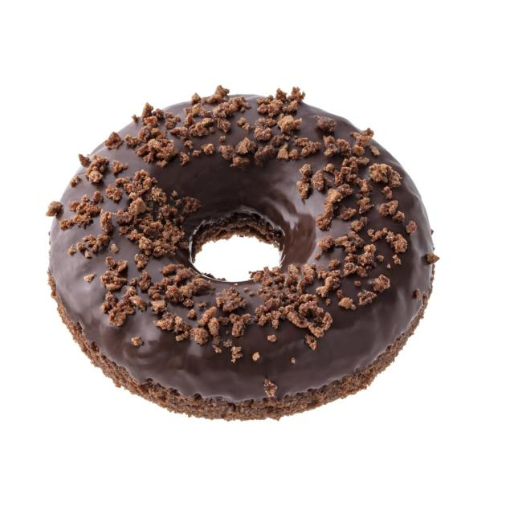
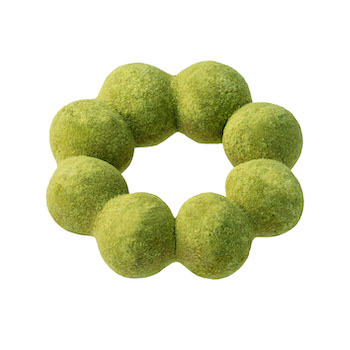

用siblings
TODO:
1. 點下去邊框聚焦
2. 圖不能縮小

用attr來做
<!DOCTYPE html>
<html lang="en">

    <head>
        <meta charset="UTF-8">
        <meta http-equiv="X-UA-Compatible" content="IE=edge">
        <meta name="viewport" content="width=device-width, initial-scale=1.0">
        <title>EX4</title>
        <link rel="stylesheet" href="https://cdn.jsdelivr.net/npm/bootstrap@5.1.3/dist/css/bootstrap.min.css"
            integrity="sha384-1BmE4kWBq78iYhFldvKuhfTAU6auU8tT94WrHftjDbrCEXSU1oBoqyl2QvZ6jIW3" crossorigin="anonymous">
        <style>
            * {
                /* box-sizing: border-box; */
            }

            .img-wrap .img-row {
                /* border: 1px solid red; */
                border-radius: 50%;
                overflow: hidden;
            }

            .img-row {
                width: 100px;
                height: 100px;
            }
        </style>
    </head>

    <body>
        <div class="container">
            <div class="row">
                <div class="col-12">
                    <div class="img-wrap d-flex">
                        <div class="img-row mx-4">
                            
                        </div>
                        <div class="img-row mx-4">
                            
                        </div>
                        <div class="img-row mx-4">
                            
                        </div>
                        <div class="img-row mx-4">
                            
                        </div>
                        <div class="img-row mx-4">
                            
                        </div>
                    </div>
                </div>
            </div>
        </div>

        <script src="./js/jquery-3.6.0.js"></script>
        <script>
            // TODO:點選後替換圖片
            // 1. 點選 (click event)
            // 2. 替換圖片，小圖 src 去替換大圖 src
            // 3. 拿到小圖的 src
            // 4. 修改大圖的 src

            $("img").click(function () {
                $(this)
                    .css("border", '1px solid red')
                    .parent()
                    .siblings()
                    .css('border', '1px solid blue');
                // const imgSrc = $(e.currentTarget).attr("src");
                // $('.product-demo img').attr('src', imgSrc);
            });


        </script>
    </body>

</html>